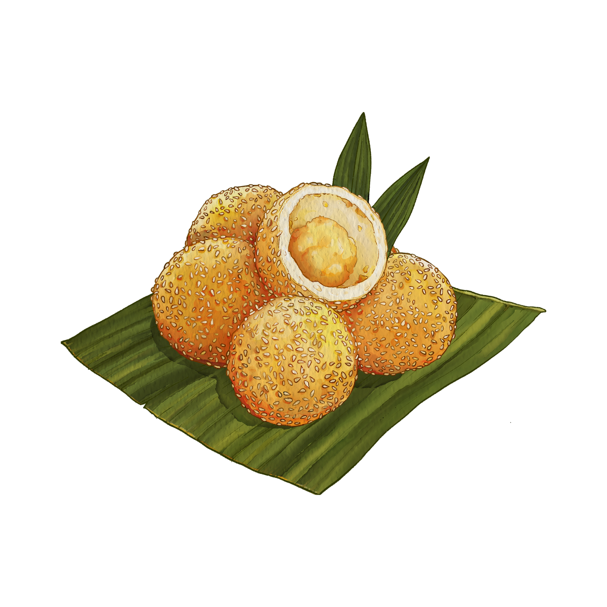

Tentang Kami
Dapoer Naniek didirikan dengan tujuan melestarikan dan mempromosikan jajanan tradisional Indonesia.
Dapoer Naniek adalah usaha keluarga yang berkomitmen untuk menjaga resep jananan tradisional Indonesia dan menyediakan jajanan yang lezat serta berkualitas. Berdiri sejak tahun 1990, kami terus berinovasi tanpa meninggalkan cita rasa asli.
Untuk lebih mengenal kami, kunjungi YouTube Channel Kami